승강기산업기사 (2019-04-27 기출문제)
1과목: 승강기개론
1. 카 또는 승강장 출입구 문턱부터 아래로 평탄하세 내려진 수직 부분의 앞 보호판을 무엇이라 하는가?
- 슬링
- 에이프런
- 피난안전구역
- 승강로 상부공간
(정답률: 94%)

2. 에스컬레이터의 보조 브레이크는 속도가 공칭속도의 몇 배의 값을 초과하기 전에 유효해야 하는가?
- 1.2
- 1.4
- 1.6
- 1.8
(정답률: 76%)
3. 가이드(주행안내) 레일을 감싸고 있는 블록과 레일 사이에 롤러를 물려서 카를 정지시키는 비상정지장치(추락방지안전장치)는?
- F.G.C형
- F.W.C형
- 점차작동형
- 즉시작동형
(정답률: 73%)
4. 카 내부에 통화장치를 설치하는 주된 목적은?
- 보수를 편리하게 하기 위하여
- 카 내 상황을 감시하기 위하여
- 기계실과 카 내의 연락을 위하여
- 카 내에서의 위급상황 등을 외부에 연락하기 위하여
(정답률: 92%)
5. 권상 도르래ㆍ풀리 또는 드럼의 피치직경과 로프(벨트)의 공칭 직경 사이의 비율은 로프(벨트)의 가닥수와 관계없이 얼마 이상이어야 하는가? (단, 주택용 엘리베이터의 경우는 제외한다.)
- 20
- 30
- 40
- 50
(정답률: 90%)
6. 조속기(과속조절기) 도르래의 회전을 베벨기어에 의해 수직축의 회전으로 이축의 상부에서부터 링크 기구에 의해 매달린 구형(球形)의 진장 작용하는 원심력으로 비상정지장치(추락방지안전장치)를 작동시키는 것은?
- 디스크형
- 마찰정지형
- 플라이볼형
- 양방향 조속기(과속조절기)
(정답률: 84%)
7. 데마케이션(스텝 트레드에 있는 홈 등)은 승강장에서 스텝 뒤쪽 끝부분을 일반적으로 어떤 색상으로 표시하여 설치되어야 하는가?
- 적색
- 황색
- 청색
- 녹색
(정답률: 91%)
8. 유압 작동유의 조건으로 틀린 것은?
- 압축성이 있어야 한다.
- 열을 방출시킬 수 있어야 한다.
- 장시간 사용하여도 화학적으로 안정하여야 한다.
- 장치의 운전유온범위에서 회로 내를 유연하게 행동할 수 있는 적절한 점도가 유지되어야 한다.
(정답률: 78%)
9. 유압식 엘리베이터에 가장 많이 사용되고 있는 펌프는?(오류 신고가 접수된 문제입니다. 반드시 정답과 해설을 확인하시기 바랍니다.)
- 원심펌프
- 베인펌프
- 기어펌프
- 스크류펌프
(정답률: 84%)
10. 균형로프 및 균형체인의 기능으로 옳은 것은?
- 균형추의 무게 보상
- 카의 수평 배런스를 개선
- 카와 균형추의 무게를 조정
- 승강 행정이 긴 경우 주로프의 무게를 보상
(정답률: 80%)
11. 승강장의 도어 인터록 설정 방법으로 옳은 것은?
- 잠김 후 스위치가 작동하도록 한다.
- 잠김 전에 스위치가 작동하도록 한다.
- 잠김과 스위치가 동시에 작동하도록 한다.
- 잠김만 확실하면 되고, 스위치 작동여부는 관계가 없다.
(정답률: 83%)
12. 엘리베이터용 승강장 도어 표기를 "2S“라고 한 때 숫자 "2"와 문자 "S"가 나타내는 것은?
- "2" : 도어의 형태, “S” : 중앙열기
- “2" : 도어의 매수, “S" : 중앙열기
- "2" : 도어의 형태, “S" : 측면열기
- "2" : 도어의 매수, “S" : 측면열기
(정답률: 87%)
13. 카에는 카 조작반 및 카 벽에서 100mm 이상 떨어진 카 바닥 위로 1m 모든 지접에 몇Ix 이상으로 비추는 전기조명장치가 영구적으로 설치되어야 하는가?
- 2
- 5
- 50
- 100
(정답률: 67%)
14. 전자-기계 브레이크에 대한 설명으로 틀린 것은?
- 브레이크 라이닝은 불연성이어야 한다.
- 브레이크슈 또는 패드 압령은 압축 스프링 또는 무게추에 의해 발휘되어야 한다.
- 구동기는 지속적인 자동조작에 의해서만 브레이크를 개방할 수 있어야 한다.
- 브레이크 작동과 관련된 부품은 권상도르래, 드럼 또는 스프로킷 등 직접적이고 확실한 장치에 의해 연결되어야 한다.
(정답률: 82%)
15. 에스컬레이터의 경사도는 몇 도를 초과하지 않아야 하는가?
- 10
- 20
- 30
- 45
(정답률: 87%)
16. 엘리베이터용 도르래 홈의 형상에 따를 마찰력 크기를 옳게 나타낸 것은?
- V홈 ＞언더컷 홈＞U홈
- U홈＞언더컷 홈＞V홈
- V홈＞U홈＞언더컷 홈
- 언더컷 홈＞V홈＞U홈
(정답률: 83%)
17. 교류식 엘리베이터의 제어방식이 아닌 것은?
- 정지레오나드방식
- 교류궤한제어방식
- 교류1단속도제어방식
- 교류2단속도제어방식
(정답률: 88%)
18. 엘리베이터용 레일의 치수를 결정하는 데 적용되는 요소가 아닌 것은?
- 엘리베이터의 정격속도에 대한 고려
- 안전장치가 작동했을 때의 좌굴하중을 고려
- 지진 시 레일 휨이나 응력의 탄성한계를 고려
- 불균형한 큰 하중이 적재될 경우의 회전모멘트를 고려
(정답률: 80%)
19. 카의 운전 조작방식에 의한 분류에 속하지 않는 것은?
- 군 관리방식
- 단식 자동식
- 승합 자동식
- 인버터 제어방식
(정답률: 87%)
20. 기어드형 권상기에서 엘리베이터의 속도를 결정하는 요소가 아닌 것은?
- 시브의 직경
- 로프의 직경
- 기어의 감속비
- 전동기의 회전수
(정답률: 84%)
2과목: 승강기설계
21. 연강의 인장강도가 4,100kg/cm2일 때 이것의 안전율이 6이라면 허용응력은 약 몇 kg/cm2인가?
- 342
- 683
- 1.367
- 2,732
(정답률: 90%)
22. 하중값이 시간적으로 변화하는 상황에 따른 분류에 속하지 않는 것은?
- 분포하중
- 교번하중
- 반복하중
- 충격하중
(정답률: 63%)
23. 엘리베이터용 가이드(주행안내) 레일을 설치할 때 가이드(주행안내) 레일의 허용응력은 일반적으로 몇 kg/cm2를 적용하는가?
- 1,800
- 2,000
- 2,200
- 2,400
(정답률: 83%)
24. 엘리베이터용 리미트 스위치와 파이널 리미트 스위치의 설치방법에 대한 설명으로 틀린 것은?
- 파이널 리미트 스위치는 카가 완충기에 닫기 직전까지 작동되도록 설치하였다.
- 정상적인 착상장치나 운전에 관계없이 리미트 스위치가 작동하도록 설치하였다.
- 리미트 스위치는 광학적 조작식을, 파이널 리미트 스위치는 기계적 조작식을 설치하였다.
- 리미트 스위치가 작동하면 가급적 파이널 리미트 스위치는 작동되지 않도록 설치하였다.
(정답률: 55%)
25. 엘리베이터에 필요 없는 안전장치는?
- 도어 인터록
- 조속기(과속조절기)
- 핸드레일(손잡이) 안전장치
- 비상정지장치(추락방지안전장치)
(정답률: 91%)
26. 권상기, 기타 기계대에 고정 부착된 모든 장치의 중량이 P1이고, 주로프의 중량이 P2이며, 주로프에 작용하는 하중이 P3일 때 기계대에 가해지는 하중(P)의 계산식으로 옳은 것은?
- P1+P2+P3
- P1+P2+2P3
- P1+2(P2+P3)
- 2(P1+P2+P3)
(정답률: 65%)
27. 카 자중에 1,700kg, 정격하중이 1,200kg, 승강행정이 60m이고, 주로프로는 12mm 5가닥을 사용하며, 오버밸런스율은 43%, 주로프의 중량이 0.5kg/m인 엘리베이터의 트랙션비는 약 얼마인가?
- 전부하시 트랙션비:0.38, 무부하시 트랙션비:0.39
- 전부하시 트랙션비:1.38, 무부하시 트랙션비:1.39
- 전부하시 트랙션비:2.38, 무부하시 트랙션비:2.39
- 전부하시 트랙션비:3.38, 무부하시 트랙션비:3.39
(정답률: 73%)
28. 권상기 주도르래의 지금이 640mm, 기어비가 67:2인 1:1 로핑의 전기식엘리베이터가 중간층에 정지하였을 때 정지한 카를 수동으로 600mm 이동시키고자 하면 주도르래를 몇 바퀴 돌려야 하는가?
- 4
- 6
- 8
- 10
(정답률: 50%)
29. 엘리베이터의 가이드(주행안내) 레일을 설치할 때 레일 브래킷의 간격을 좁게 하면 동일한 하중에 대하여 응력과 휨은 어떻게 되는가?
- 응력과 휨 모두 커진다.
- 응력과 휨 모두 작아진다.
- 응력은 작아지고 휨은 커진다.
- 응력은 커지고 휨은 작아진다.
(정답률: 74%)
30. 전선의 굵기를 산정할 때 우선적으로 고려하여야 할 사항으로 거리가 먼 것은?
- 전압강하
- 전지저항
- 허용전류
- 기계적강도
(정답률: 47%)
31. 다음 그림의 엘리베이터 로핑방법으로 옳은 것은?
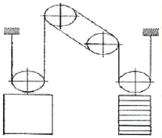
- 1:1 single Wrap
- 1:1 Double Wrap
- 2:1 single Wrap
- 2:1 Double Wrap
(정답률: 87%)
32. 권상기용 유도전동기의 전압 220V, 주파수 f, 극수 P, 슬립이 5%일 때, 회전속도(rpm)은?
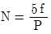
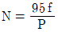
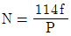
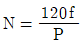
(정답률: 63%)
33. 균형추의 중량을 구하는 식으로 옳은 것은?
- 균형추 중량=카 자중+정격하중
- 균형추 중량=카 자중+정격하중×오버밸런스율
- 균형추 중량=정격하중+카 자중×오버밸런스율
- 균형추 중량=카 자중+정격하중×이동케이블 중량
(정답률: 87%)
34. 점차 작동형 비상정지장치(추락방지안전장치)의 동작 개시속도가 120m/s이고 감속시간이 1.5s이면 평균감속도는 몇 m/s2인가?
- 7.16
- 7.90
- 8.16
- 9.80
(정답률: 54%)
35. 압력 릴리프 밸브는 압력을 전 부하 압력의 몇 %까지 제한하도록 맞추어 조절되어야 하는가?
- 100
- 115
- 125
- 140
(정답률: 79%)
36. 카 바닥과 카 틀의 부재에 작용하는 하중의 종류로 틀린 것은?
- 카 바닥-굽힘력
- 상부체대-굽힘력
- 하부체대-전단력
- 카 주-굽힘력, 장력
(정답률: 77%)
37. 승강기의 교통량 게산에 반드시 필요한 자료가 아닌 것은?
- 층고
- 층별 인구
- 승강기 대수
- 빌딩의 용도 및 성질
(정답률: 61%)
38. 엘리베이터용 변압기의 용량을 계산할 때 필요하지 않은 것은?
- 정격전압
- 기계실 크기
- 엘리베이터 수량
- 정격전류(전 부하 상승 시 전류)
(정답률: 82%)
39. 엘리베이터의 교통량 계산에 대하여 틀린 것은?
- RTT=∑(주행시간+도어개폐시간+승객출입시간-손실시간)
- 주행시간=∑(가속시간+감속시간+전속주행시간)
- 수송능력의 향상을 위해서는 실효속도가 높아야 한다.
- 로컬서비스구간의 주행시간은 정격속도의 대소에 영향을 받지 않는다.
(정답률: 73%)
40. 에스컬레이터 배열 시 설치면적이 적고, 쇼핑객의 시야를 트이게 배열하는 방식은?
- 복열승계형
- 복열겹침형
- 단열승계형
- 단열겹침형
(정답률: 51%)
3과목: 일반기계공학
41. 판 두께 10mm, 인장강도 3,500N/cm2, 안전계수 4인 연강판으로 5N/cm2의 내압을 받는 원통을 만등고자 한다. 이 때 원통의 안지름은 몇 cm인가?(오류 신고가 접수된 문제입니다. 반드시 정답과 해설을 확인하시기 바랍니다.)
- 87.5
- 175
- 350
- 700
(정답률: 39%)
42. 다음 중 새들 키라고도 하며 축에는 키 홈이 없고, 축의 원호에 접할 수 있도록 하며 보스에만 키 홈을 파는 것은?
- 안장 키
- 접선 키
- 평 키
- 반달 키
(정답률: 73%)
43. 연성재료의 절삭가공 시 발생하는 칩의 형태로 절삭저항이 가장 적고, 매끈한 가공면을 얻을 수 있는 칩의 형태는?
- 전단형
- 유동형
- 균열형
- 열단형
(정답률: 57%)
44. 구멍용 한계 게이지에 포함되지 않는 것은?
- C형 스냅게이지
- 원통형 플러그 게이지
- 봉 게이지
- 판 플러그 게이지
(정답률: 64%)
45. 평벨트와 비교하여 V벨트의 전동특성에 해당하지 않는 것은?
- 매끄럼이 작다.
- 운전이 정숙하다.
- 평 벨트와 같이 벗겨지는 일이 없다.
- 지름이 작은 풀리에는 사용이 어렵다.
(정답률: 67%)
46. 알루미늄 분말, 산화철 분말과 점화제 혼합반응으로 열을 발생시켜 용접하는 방법은?
- 테르밋 용접
- 피복 아크 용접
- 일렉트로 슬래그 용접
- 불활성 가스 아크 용접
(정답률: 79%)
47. Al, Cu, Mg으로 구성된 합금에서 인장강도가 크고 시효경화를 일으키는 고력(고강도)알루미늄 합금은?
- Y합금
- 실루민
- 로루엑스
- 두랄루민
(정답률: 80%)
48. 도가니로의 규격은 어떻게 표시하는가?
- 시간당 용해 가능한 구리의 중량
- 시간당 용해 가능한 구리의 부피
- 한 번에 용해 가능한 구리의 중량
- 한 번에 용해 가능한 구리의 부피
(정답률: 68%)
49. 속이 찬 회전축의 전달마력이 7kW이고 회전수가 350rpm일 때 축의 전달 토크는 약 몇 Nㆍm인가?
- 101
- 151
- 191
- 231
(정답률: 61%)
50. 그림과 같은 코일 스프링 장치에서 작용하는 하중을 W, 스프링 상수를 K1, K2라 할 경우, 합성스프링 상수를 바르게 표현한 것은?
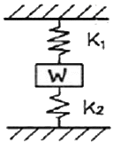
- K1+K2
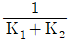
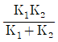
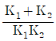
(정답률: 63%)
51. 용기 내의 압력을 대기압력 이하의 저압으로 유지하기 위해 대기압력 쪽으로 기체를 배출하는 장치는?
- 공기압축기
- 진공펌프
- 송풍기
- 축압기
(정답률: 65%)
52. 다음 중 체결용으로 가장 많이 쓰이는 나사는?
- 사각나사
- 삼각나사
- 톱니나사
- 사다리꼴나사
(정답률: 77%)
53. 그림의 유압장치에서 A부분 실린더 단면적 200cm2, B부분 실린더 단면적이 50cm2일 때 F2에 작용하는 힘이 1,000N이면 F1에는 몇 N의 힘이 작용하는가?
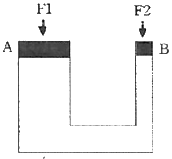
- 3,000
- 4,000
- 5,000
- 6,000
(정답률: 77%)
54. 펌프의 케비테이션 방지책으로 틀린 것은?
- 펌프의 설치 위치를 높인다.
- 회전수를 낮추어 흡입 비교 회전도를 낮게 한다.
- 단흡입 펌프 대신 양흡입 펌프를 사용한다.
- 펌프의 흡입관 손실을 작게 한다.
(정답률: 67%)
55. 그림과 같이 자유단에 집중 하중을 받고 있는 외팔보의 굽힘 모멘트 선도로 가장 적합한 것은?
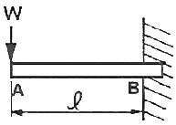
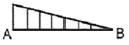
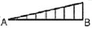
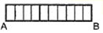
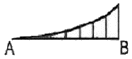
(정답률: 61%)
56. 기어나 피스톤 핀 등과 같이 마모작용에 강하고 동시에 충격에도 강해야 할 때, 강의 표면을 경화하기 위하여 열처리하는 방법이 아닌 것은?
- 침탄법
- 고주파법
- 침탄질화법
- 저온풀림법
(정답률: 68%)
57. 강과 주철은 어떤 원소의 함유량에 의해 구분하는가?
- C
- Mn
- Ni
- S
(정답률: 79%)
58. 프와송의 비로 옳은 것은?
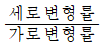
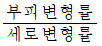
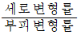
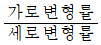
(정답률: 74%)
59. 원형 단면의 축에 발생한 비틀림에 대한 설명으로 옳지 않은 것은? (단, 재질은 동일하다.)
- 비틀림각이 클수록 전단 변형률은 크다.
- 축의 지름이 클수록 전단 변형률은 크다.
- 축의 길이가 길수록 전단 변형률은 크다.
- 축의 지름이 클수록 전단 응력은 크다.
(정답률: 48%)
60. 인발에 영향을 미치는 요인이 아닌 것은?
- 윤활방법
- 단면 감소율
- 펀치의 각도
- 다이(die)의 각도
(정답률: 60%)
4과목: 전기제어공학
61. 발전기의 유기기전력의 방향과 관계가 있는 법칙은?
- 플레밍의 왼손법칙
- 플레밍의 오른손법칙
- 패러데이의 법칙
- 암페어의 법칙
(정답률: 73%)
62. 100mH의 자기 인턱턱스를 가진 코일에 10A의 전류가 통과할 때 축적되는 에너지는 몇 J인가?
- 1
- 5
- 50
- 1,000
(정답률: 47%)
63. 특성방정식 s2+2s+2=0을 갖는 2차계에서의 감쇠율 ξ(damping ratio)은?
- √2
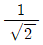
- 1/2
- 2
(정답률: 65%)
64. 60Hz, 100V의 교류전압이 200Ω의 전구에 인가될 때 소비되는 전력은 몇 W인가?
- 50
- 100
- 150
- 200
(정답률: 53%)
65. 3상 유도전동기의 회전방향을 바꾸기 위한 방법으로 옳은 것은?
- △-Y 결선으로 변경한다.
- 회전자를 수동으로 역회전시켜 기동한다.
- 3선을 차례대로 바꾸어 연결한다.
- 3상 전원 중 2선의 접속을 바꾼다.
(정답률: 84%)
66. 그림과 같은 병렬공진회로에서 전류 I가 전압 E보다 앞서는 관계로 옳은 것은?
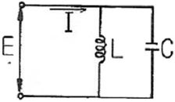
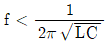
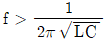
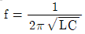
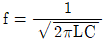
(정답률: 68%)
67.
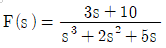
일 때 f(t)의 최종치는?- 0
- 1
- 2
- 8
(정답률: 46%)
68. 제어된 제어대상의 양 즉, 제어계의 출력을 무엇이라고 하는가?
- 목표값
- 조작량
- 동작신호
- 제어량
(정답률: 68%)
69. 전원 전압을 일정 전압 이내로 유지하기 위해서 사용되는 소자는?
- 정전류 다이오드
- 브리지 다이오드
- 제너 다이오드
- 터널 다이오드
(정답률: 66%)
70. 플로우차트를 작성할 때 다음 기호의 의미는?
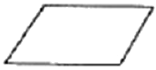
- 단자
- 처리
- 입출력
- 결합자
(정답률: 60%)
71. 8Ω, 12Ω, 20Ω, 30Ω의 4개 저항을 병렬로 접속할 때 합성저항은 약 몇 Ω인가?
- 2.0
- 2.35
- 3.43
- 3.8
(정답률: 61%)
72. 평형 3상 Y결선에서 상전압 Vp와 선간전압 Vl과의 관계는?
- V1=Vp
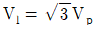
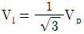
- V1=3Vp
(정답률: 70%)
73. 시퀀스제어에 관한 설명 중 틀린 것은?
- 조합논리회로로 사용된다.
- 미리 정해진 순서에 의해 제어된다.
- 입력과 출력을 비교하는 장치가 필수적이다.
- 일정한 논리에 의해 제어된다.
(정답률: 73%)
74. 다음 블록선도 중에서 비례미분제어기는?
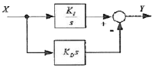
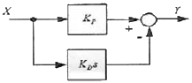
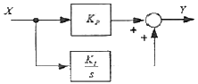
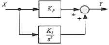
(정답률: 47%)
75. 목표값이 미리 정해진 변화를 할 때의 제어로서, 열처리 노의 온도제어, 무인운전열차 등이 속하는 제어는?
- 추종제어
- 프로그램제어
- 비율제어
- 정치제어
(정답률: 81%)
76. 피드백제어계 중 물체의 위치, 방위, 자세 등의 기계적 변위를 제어량으로 하는 것은?
- 서보기구
- 프로세스제어
- 자동조정
- 프로그램제어
(정답률: 78%)
77. 그림과 같은 계전기 접점회로의 논리식은?
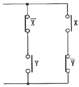
- XY
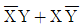
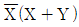
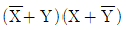
(정답률: 78%)
78. 유도전동기의 역률을 개선하기 위하여 일반적으로 많이 사용되는 방법은?
- 조상기 병렬접속
- 콘덴서 병렬접속
- 조상기 직렬접속
- 콘덴서 직렬접속
(정답률: 78%)
79. 그림과 같이 블록선도를 접속하였을 때, ⓐ에 해당하는 것은?
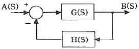
- G(s)+H(s)
- G(s)-H(s)
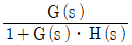
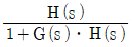
(정답률: 83%)
80. T1＞T2＞0일 때,
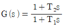
의 벡터궤적은?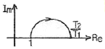
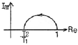
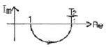
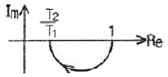
(정답률: 58%)